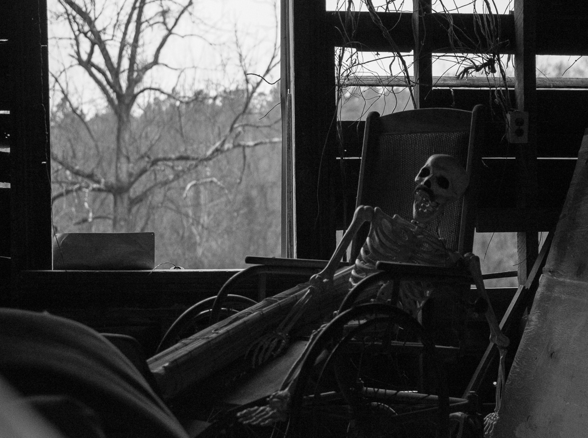

Chapter 4: The danger inside
Previous chapterIn the house
The house smelled like pumpkin and cinnamon as the kids walk across the dark hall. The house seems to be empty but still they can't help feeling like someone is watching them.
"Look! That door is open!" Tim points to a door behind George.
"Could George's dog could have gone there? Maybe they already returned outside...", Jack whispers their voice trembling.
"No they definitely are here", says George who has reached the open door first. "I can see their footsteps in the dust. And they are only going one way...", Jack gulps.
The others gather next to them and look down narrow stairway that must go in to the basement of the house. However, all they can see in the end of the stairs is complete darkness...
But then they hear howls from around the room. They are surrounded by spooky scary ghosts!